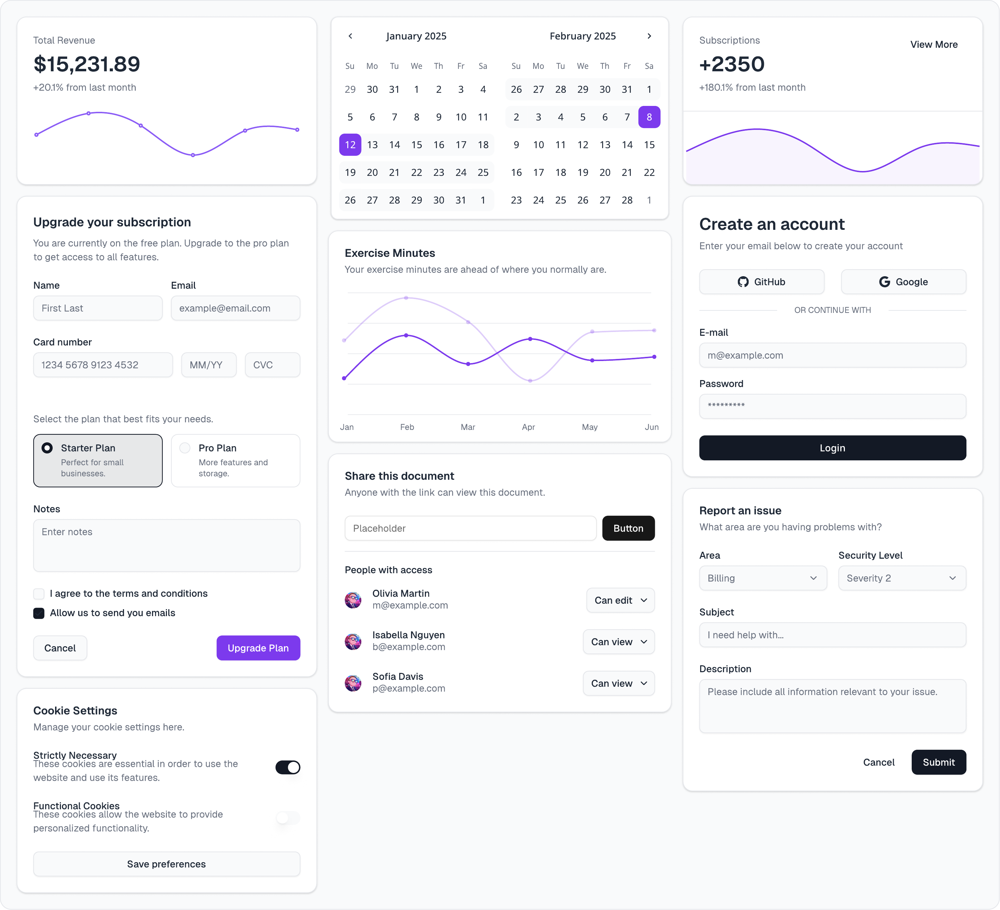
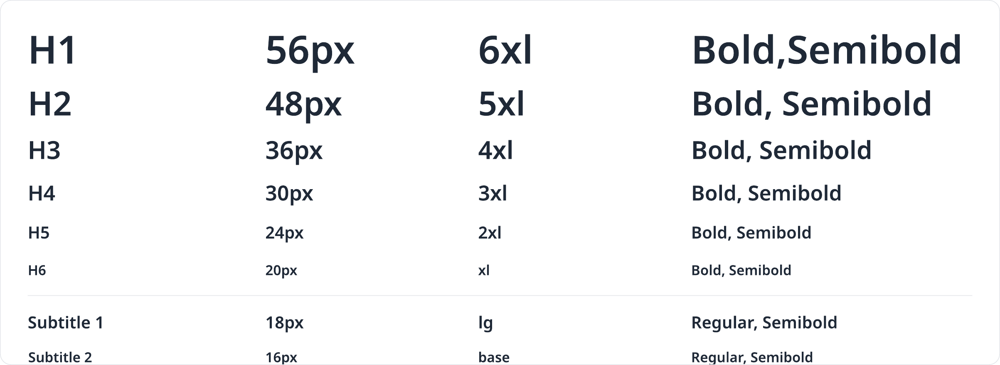
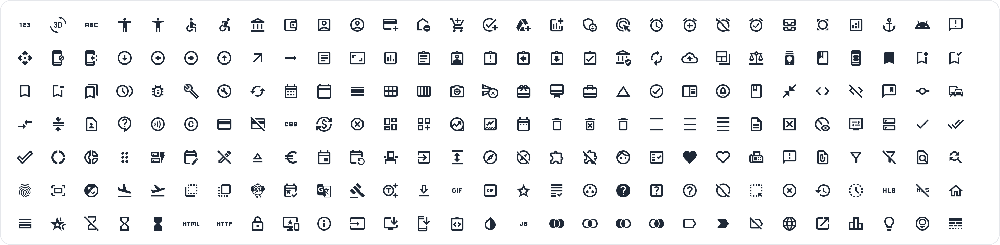
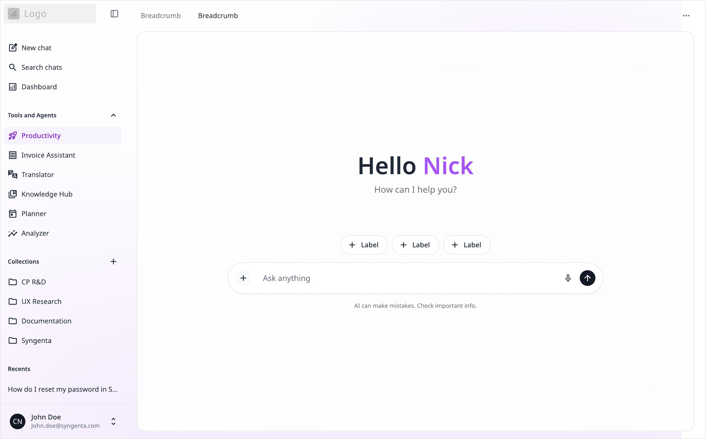
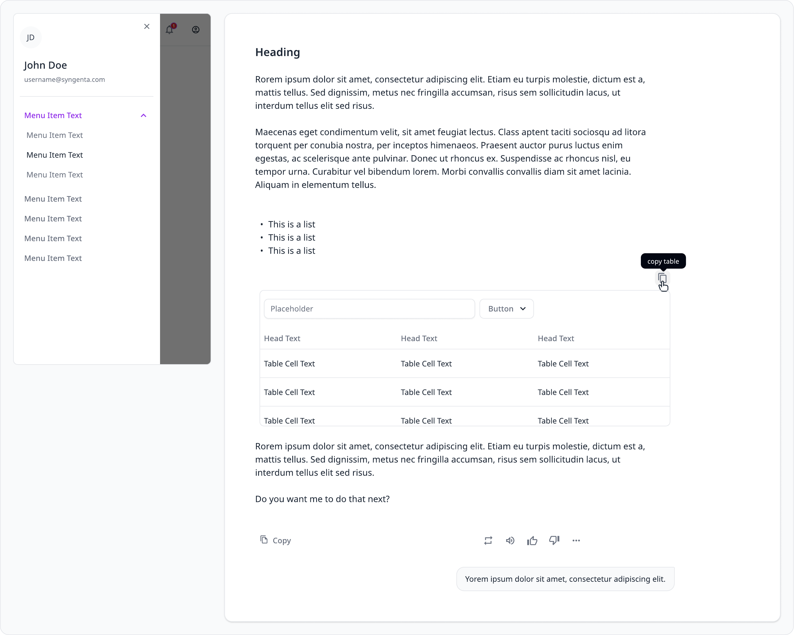
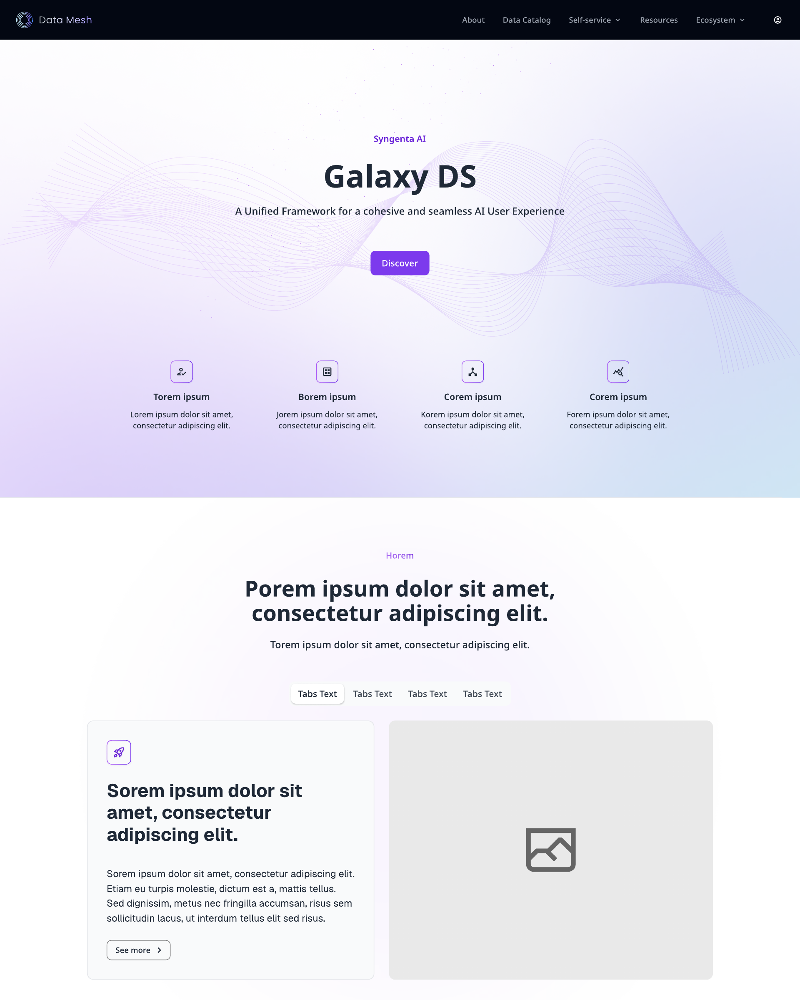
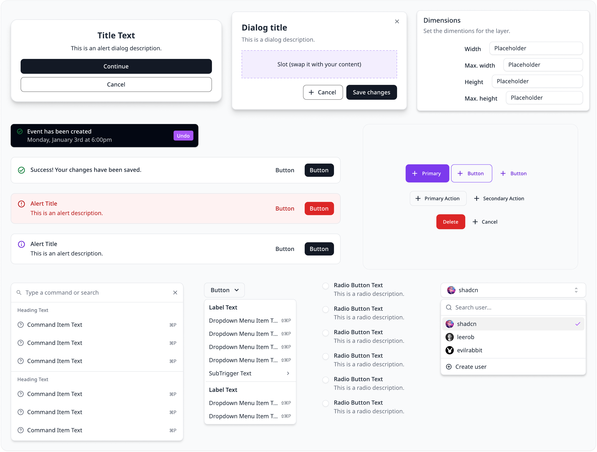

Overview
As AI Foundry grew from a single hub into a family of products — web, mobile, landing pages, and an SDK for internal teams building on the platform — every screen was being designed and built from scratch. I created the AI Foundry Design System: a single source of truth covering foundations, components, and theming, packaged so both designers and engineers consume the same system.
The goal was twofold: make the product family feel like one product, and make the SDK path real — teams building their own AI experiences on the platform should inherit accessible, brand-consistent UI for free rather than reinventing chat interfaces from zero.
Foundations
Everything sits on documented foundations: a responsive grid spanning breakpoints from mobile to widescreen, a type scale engineered for long-form AI responses as much as interface chrome, and a consistent icon set with defined sizing, stroke, and usage rules.



Components
Generic component libraries don't answer AI-product questions: how does a streamed response render a table? Where do feedback controls live? What does a source citation look like? I designed the component layer around these AI-native patterns — the chat surface, rich response content (headings, lists, copyable tables), message-level actions, and the mobile navigation drawer.


Every response element is specified down to its micro-interactions — hover-revealed copy table actions, feedback and read-aloud controls, and follow-up prompts — so engineers implement behaviour, not guesswork.
Theming
The system is fully tokenised: colour, elevation, and type resolve through semantic tokens, so light and dark themes come from one definition — proven end-to-end on the AI Foundry landing page, designed and built in both modes without a single hard-coded value.


Impact
The design system now underpins AI Foundry's web hub, mobile experience, and marketing surfaces, and forms the UI layer of the platform SDK. New screens start from documented parts instead of blank canvases — design and engineering share one vocabulary, reviews focus on the problem rather than the pixels, and the product family reads as one product.